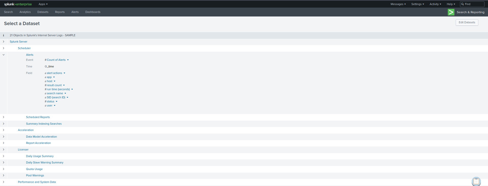
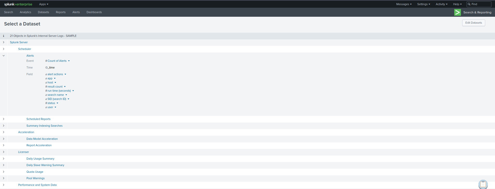

Pivots e Splunk Applications
Strumenti Avanzati per Analisi Dati
Pivots
Funzionalità estremamente potente che permette di creare report e visualizzazioni complesse senza scrivere query SPL.
Caratteristiche:
- Interfaccia drag-and-drop interattiva
- Definizione e raffinamento criteri di reporting
- Strumento fantastico per identificare ed esplorare dati e campi disponibili
Accesso: Usa il pulsante Pivot che appare quando navighi un particolare data model nella pagina Data Models.
Splunk Applications
Pacchetti aggiunti a Splunk Enterprise o Splunk Cloud per estendere capacità e gestire tipi specifici di dati operativi.
Caratteristiche:
- Ogni app è personalizzata per gestire dati da tecnologie specifiche
- Agisce come pacchetto di conoscenza pre-costruito
- Fornisce: input dati personalizzati, visualizzazioni, dashboard, alert, report
 

Splunkbase
Le app pronte all'uso possono essere trovate su Splunkbase, fornendo funzionalità aggiuntive e soluzioni pre-configurate.
Considerazioni: Quando si usano app in Splunk, considera fattori come volume dati, requisiti hardware e licenze. Molte app possono essere intensive in termini di risorse.